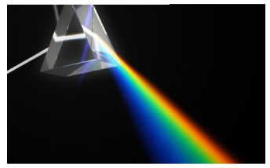
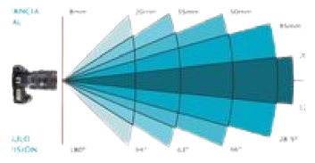
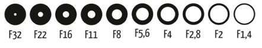
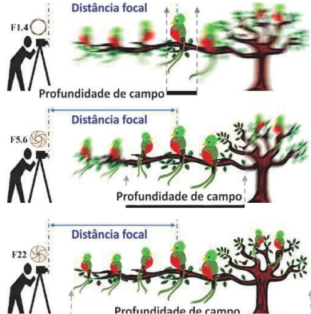
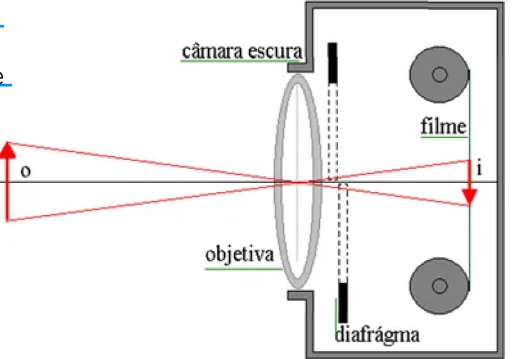
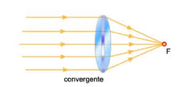
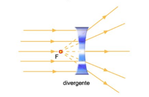

O que são as câmeras e as filmadoras?
A câmera é um dispositivo utilizado para capturar imagens, seja em formato de fotografias ou vídeos. O princípio básico de funcionamento de uma câmera é a captura da luz refletida por um objeto e sua conversão em uma imagem, seja em formato físico (como em um filme fotográfico) ou digital (como em um sensor eletrônico). Nela existe variros componentes como as lentes; A lente é o elemento responsável por focar a luz no sensor ou filme. A qualidade da lente influencia diretamente a nitidez e a qualidade da imagem capturada ja as filmadoras conhecida como câmera de vídeo, é um dispositivo projetado especificamente para capturar imagens em movimento, permitindo a gravação de vídeos. Enquanto as câmeras fotográficas se concentram na captura de imagens estáticas, as filmadoras são otimizadas para registrar sequências de vídeo, com foco em qualidade de imagem e áudio, além de funcionalidades específicas para gravação em movimento.
O que é uma lente?
As lentes das câmeras são componentes fundamentais responsáveis por focar a luz que entra na câmera e projetá-la no sensor ou filme para formar uma imagem nítida. Elas são compostas por um conjunto de vidros ou materiais plásticos curvos, chamados de elementos, que direcionam e controlam a luz de diferentes maneiras. E no panorama fotográfico, a qualidade e o tipo da lente influenciam diretamente o resultado final da fotografia ou do vídeo. Sua principal função é capturar a luz que reflete o objeto e focá-la no ponto correto, de forma que a imagem formada seja clara e detalhada. Dependendo das características da lente, é possível modificar aspectos como o campo de visão, a profundidade de campo (a área que está em foco), e a quantidade de luz que chega ao sensor.
Aplicação da Física
As lentes das câmeras fotográficas e filmadoras desempenham um papel crucial na formação da imagem. A física por trás das lentes envolve o controle da luz que entra na câmera e a maneira como essa luz é focalizada no sensor ou filme
Refração da Luz
A refração é o fenômeno que ocorre quando a luz passa de um meio para outro com densidade diferente. Isso faz com que a luz mude de direção, e é esse princípio que permite às lentes convergir ou divergir os raios de luz para formar uma imagem.
Distância Focal
A distância focal é a distância entre o centro óptico da lente e o ponto onde os raios de luz convergem para formar uma imagem nítida.
Abertura (f-stop)
A abertura é o diâmetro da abertura da lente que permite a entrada de luz. Ela é ajustável e é medida pelo número f (f-stop). Uma abertura maior (número f menor) permite a entrada de mais luz e resulta em uma menor profundidade de campo, enquanto uma abertura menor (número f maior) permite a entrada de menos luz e aumenta a profundidade de campo.
Profundidade de Campo
A profundidade de campo refere-se à área na frente e atrás do ponto de foco que aparece nítida na imagem. A abertura, a distância focal e a distância do objeto afetam a profundidade de campo.
Aberrações Ópticas
Aberrações cromáticas ocorrem quando as diferentes cores da luz não convergem no mesmo ponto, enquanto aberrações esféricas acontecem quando os raios de luz que passam pelas bordas da lente não se focam no mesmo ponto que os que passam pelo centro.
Funcionamento do olho e cerebro com o funcionamento das cameras fotograficas e filmadoras
A relação entre o funcionamento do olho humano, do cérebro e das câmeras fotográficas e filmadoras destaca semelhanças na percepção visual e na captura de imagens. O olho humano possui estruturas como a córnea e a lente, que permitem a entrada e o foco da luz na retina, onde células sensíveis convertem a luz em sinais elétricos enviados ao cérebro, resultando na percepção visual. Da mesma forma, uma câmera tem uma lente que foca a luz em um sensor ou filme, capturando-a como uma imagem. Câmeras modernas ajustam automaticamente exposição e foco, criando imagens digitais. A acomodação do olho permite focar automaticamente em diferentes distâncias, enquanto as câmeras possuem ajustes manuais ou automáticos. O campo de visão do olho é amplo, enquanto nas câmeras depende do tipo de lente utilizada. O cérebro armazena imagens visuais, permitindo sua lembrança e interpretação, enquanto as câmeras armazenam imagens em cartões de memória ou filmes.
Convergente e Divergente:
No contexto do olho humano e câmeras, as lentes convergentes focam a luz em um ponto para formar imagens nítidas. No olho, isso acontece no cristalino, que projeta a luz na retina, e nas câmeras, na lente que foca a luz no sensor ou filme.
Já as lentes divergentes espalham a luz, usadas principalmente para corrigir problemas de visão, como a miopia, ajudando a ajustar o foco da luz corretamente na retina.
O Princípio da Câmera Escura
A câmera escura é um dispositivo óptico simples que serve como o princípio básico de funcionamento de câmeras modernas. Seu nome vem do latim e significa "quarto escuro". Foi descrita por pensadores como Aristóteles e Alhazen (Ibn al-Haytham) no século 10 e se tornou uma ferramenta fundamental para estudos de óptica.
- Estrutura: É basicamente uma caixa ou sala completamente fechada, com um pequeno orifício em um dos lados.
- Princípio: A luz externa entra pelo orifício e projeta uma imagem invertida da cena do lado de fora na superfície oposta dentro da caixa.
- Imagem Invertida: Devido à maneira como os raios de luz viajam em linha reta, a imagem projetada é invertida (de cabeça para baixo).
Como Funciona:
A câmera escura serviu de base para as câmeras atuais ao demonstrar o princípio de captura de imagens através da entrada de luz por um orifício. Ao longo do tempo, ela foi aprimorada com a adição de lentes para focar melhor a luz e, posteriormente, com a introdução de materiais fotossensíveis, como filmes, que permitiram registrar a imagem projetada. Esses avanços culminaram no desenvolvimento das câmeras fotográficas modernas, que hoje utilizam sensores digitais para capturar e armazenar imagens.
Lentes da Fisíca na Fotografia
As lentes utilizadas em câmeras e filmadoras são dispositivos ópticos fundamentais que funcionam pela refração da luz. Elas podem ser classificadas em diferentes tipos, cada uma com características específicas que influenciam a forma como a luz é capturada - O comportamento das lentes ao receber a luz incidente determina a formação de diferentes tipos de imagens.
- Todo raio de luz que incide paralelo ao eixo principal é refratado na direção do foco;
- Todo raio de luz que incide na lente pelo foco refrata-se paralelamente ao eixo principal;
- Todo raio de luz que incide sobre o centro óptico não sofre desvio.
Lente Convexa (Convergente)
As lentes convergentes são mais espessas no centro do que nas bordas, o que permite que elas refratem (dobrem) os raios de luz que passam por elas. Quando a luz incide paralelamente ao eixo principal da lente, ela é refratada em direção a um ponto focal, onde os raios de luz se encontram. Esse ponto é conhecido como foco real.
As lentes convergentes podem formar diferentes tipos de imagens dependendo da posição do objeto em relação ao foco:
- Quando o objeto (representado em azul) é posicionado antes do ponto antiprincipal, a lente forma uma imagem (representada em vermelho) real, invertida e menor que o objeto.
- Quando o objeto (representado em azul) é posicionado sobre o ponto antiprincipal, a lente forma uma imagem (representada em vermelho) real, invertida e igual ao objeto.
- Quando o objeto (representado em azul) é posicionado entre o ponto antiprincipal e o foco da lente, a imagem formada (representada em vermelho) é real, invertida e maior que o objeto.
- Quando o objeto (representado em azul) é posicionado sobre o foco da lente, não é formada uma imagem, pois os raios refratados são paralelos e nunca se cruzam para formar uma imagem do objeto.
- Quando o objeto (representado em azul) é posicionado entre o foco e o centro óptico da lente, sua imagem (representada em vermelho) é virtual, direita e maior que objeto.

Lente Concâva (Divergente)
As lentes divergentes, também conhecidas como lentes côncavas, são um tipo de lente esférica que possui pelo menos uma das extremidades com uma curvatura para o lado interno e, por isso, apresenta uma espessura menor no centro e umaespessura maior nas bordas. Pela sua característica de diferença de espessura entre o centro e as bordas, ela diverge os raios de luz - Uma das principais características das lentes divergentes é diminuir objetos.
Podemos classificar as lentes divergentes em três tipos diferentes:
- Bicôncava: Nesse tipo de lente esférica as duas faces são côncavas.
- Plano Côncavo: Nesse tipo de lente esférica uma das faces é plana e a outra face é côncava.
- Plano Convexa-Côncava: Nesse tipo de lente esférica uma das faces é côncava e a outra face é convexa
A formação de imagens com lentes divergentes ocorre sempre da mesma maneira:
- Imagem Virtual: A imagem formada é virtual, direita e menor do que o objeto. Isso significa que a imagem não pode ser projetada em uma tela, pois os raios de luz não se encontram fisicamente; em vez disso, eles parecem vir de um ponto atrás da lente.
- Efeitos Visuais: Podem ser usadas para criar efeitos artísticos ou distorções criativas nas fotografias - Embora menos comuns em câmeras fotográficas tradicionais, podem ser usadas em configurações específicas, como em câmeras de segurança para aumentar o campo de visão.
- Acessórios Ópticos Em alguns casos, as lentes divergentes podem ser utilizadas como filtros ou acessórios que alteram a perspectiva ou o campo de visão.

Lentes fotográficas
A maior parte das lesntes utilizadas nas cameras e filmadoras de videos ou fotos são as lentes convergentes, que são aquelas que têm um centro mais espesso do que as bordas e são projetadas para convergir os raios de luz que passam por elas, ampliando a imagem. Elas podem se classificar em:
- Lente Padrão (Normal): Comumente uma lente biconvexa, utilizada para capturar imagens com perspectiva natural.
- Lente Grande Angular: Embora tenha um campo de visão amplo, ainda é uma lente convergente, normalmente biconvexa.
- Lente Ultra Grande Angular: Também é uma lente convergente, projetada para capturar ângulos de visão muito amplos.
- Lente Teleobjetiva: Convergente, utilizada para aproximar objetos distantes, com distância focal longa.
- Lente Zoom: Geralmente é uma lente convergente com capacidade de variar a distância focal.
Mapa Mental Vídeo e Infográfico sobre o assunto
clique para aumentar o Infográfico